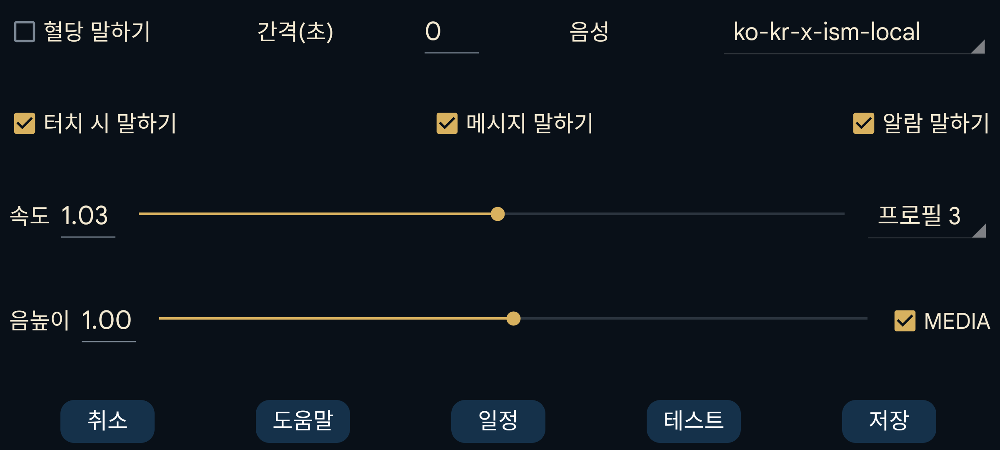

ar be de es fr hi it ja ko nl pl ru tr uk uz zh en
혈당 값이 도착하면 읽어 줍니다.
간격(초): Juggluco가 다음 혈당 값을 말하기 전에 기다릴 시간을 초 단위로 지정합니다. 혈당 값은 도착하면 항상 즉시 읽습니다. 큰 값을 지정하면 이 시간이 지나기 전에 도착한 혈당 값은 건너뜁니다.
음성: 사용 가능한 목록에서 합성 음성을 선택합니다.
속도: 숫자가 클수록 더 빠르게 말합니다.
음높이: 숫자가 클수록 음높이가 높아집니다.
테스트: 마지막 혈당 값을 읽습니다.
일부 휴대폰에서는 작동하게 하려면 Android의 텍스트 음성 변환 설정을 변경해야 합니다. 때로는 해당 언어의 데이터를 설치하거나 구성을 변경해야 합니다. Samsung 휴대폰에서 여러 음성 중 선택하려면 "Google 텍스트 음성 변환"을 "Samsung 텍스트 음성 변환 엔진" 대신 설정해야 합니다. 이러한 옵션은 Android 설정에서 텍스트 음성 변환 을 검색하거나 언어 및 입력(→고급)→텍스트 음성 변환으로 이동하여 찾을 수 있습니다. 여기에서 "Speech Services by Google"을 선택하고 음성 데이터를 설치할 수 있습니다. 다른 휴대폰에서는 다음 위치에 있습니다: 시스템 설정 → 접근성 → 시각 → 텍스트 음성 변환 설정.
다음이 켜져 있으면 터치 시 말하기 특정 위치를 터치했을 때 음성으로 알려 줍니다:
현재 혈당을 터치;
그래프의 점과 스캔 지점을 터치;
입력값을 터치;
그래프의 왼쪽 위 또는 오른쪽 위 모서리를 터치하면 해당 그래프 지점의 날짜를 말함;
메뉴 항목을 길게 누름;
입력값 목록(왼쪽 가운데 메뉴→목록)에서 입력값을 길게 누름.
화면에 일시적으로 표시되는 텍스트 메시지와 스캔 결과(오류 메시지 및 혈당 값)를 읽습니다.
저혈당 및 고혈당 알람 중 혈당 수치를 읽습니다. 알람이 시작될 때와 알람이 중지되는 순간 모두 읽습니다.
활성 프로필을 선택합니다. 기본값 이 기본 프로필입니다. 왼쪽 메뉴 → 설정 → 알람 과 말하기의 모든 설정은 활성 프로필별로 적용됩니다.
하루 중 특정 시간에 Juggluco가 프로필을 활성화하도록 설정할 수 있습니다.
Android의 소리 설정에서 음성 볼륨을 높이거나 낮출 수 있습니다. 미디어 가 꺼져 있으면 휴대폰에서는 알림 볼륨 슬라이더, WearOS 워치에서는 시스템 볼륨 슬라이더로 조절됩니다. "방해 금지"가 켜져 있으면 소리가 나지 않아야 합니다. 미디어 가 켜져 있으면 미디어 볼륨을 사용하며 대부분의 휴대폰에서는 "방해 금지" 중에도 들립니다.
알람 말하기 는 다르게 동작합니다. "알람"이 "알람을 알람으로"로 켜져 있으면 알람 음성은 "알람" 카테고리로 재생됩니다. 제 휴대폰에서는 알람 볼륨으로, 제 워치에서는 알림 볼륨으로 조절됩니다.